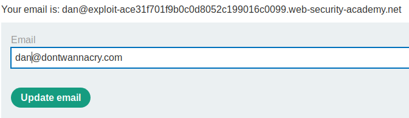

Inconsisten Security Control: Possibility of change the email to the email of an admin
Users have the possibility to change the email to an email with admin privileges
Description of the Web Application• DontWannaCry users have access privileges and the domain of their address is @dontwannacry.com
• User logged have the
option to change the email address
Vulnerability Check
1. Can we change our email to an email of an admin(something@dontwannacry.com)?
2. Yes! We can do it!